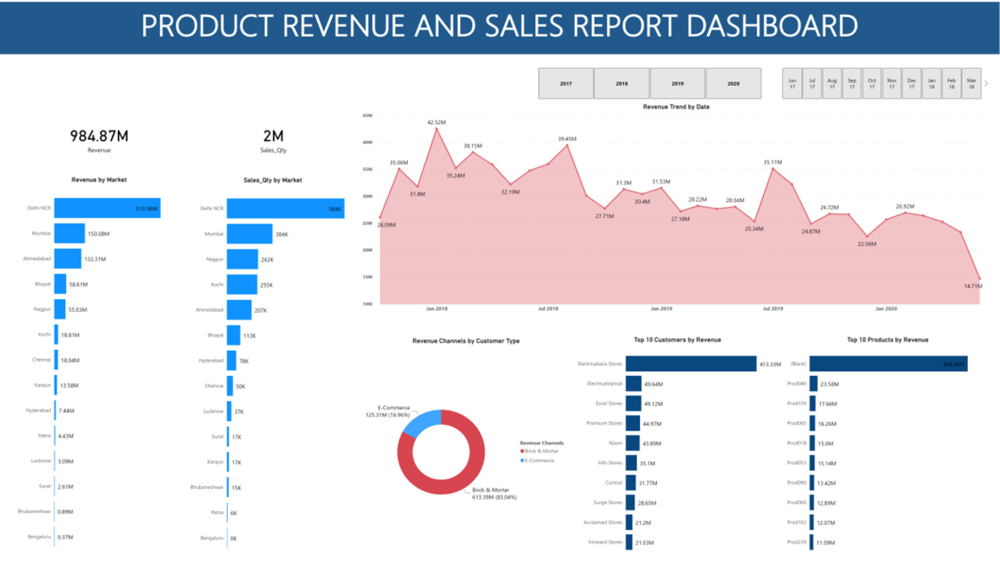

In this project, I utilized Power BI to transform historical data and create an interactive revenue insights dashboard
to help the revenue management team of Atilq Grands, a luxury and business hotel chain in India and their stakeholders make informed strategic decisions
backed by data to regain their market share and boost the revenue of their hotels.
Clicking here

In this project, I employ Python data libraries (Pandas, Matplotlib, Plotly) and the K-Means clustering algorithm to wrangle retail data,
perform exploratory data analysis(EDA) and undertake a customer segmentation analysis using RFM (Recency, Frequency, Monetary) analysis to understand
and unravel the intricacies of customer behaviour on a UK based and registered non-store online retail platform.
Clicking here
In this project I queried a Twitter API using Tweepy to extract data from a twitter archive and assess it for tidiness and quality issues. Cleaned, stored and visualized the data using Python data libraries
Pandas, Numpy, and Matplotlib.
.jpg)
In this project I analyzed data on a bike-sharing system covering the greater San Francisco Bay area using Pandas, Matplotlib and Seaborn and communicated findings using charts and graphs.

In this project, I analyzed sales data from diverse global regions. Explored key metrics,
utilized pivot tables and charts to build a dynamic Excel dashboard for interactive summaries that speaks about market trends and performance.

I analyzed revenue and sales data of an electronics marketing company to derive insights from their revenue and sales performance. Cleaned and transformed the data for analysis and created an interactive report dashboard to visualize the revenue and sales performance.